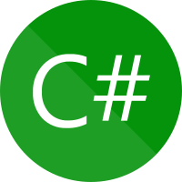

Python
Python é uma linguagem de programação de alto nível,interpretada de script, imperativa, orientada a objetos, funcional, de tipagem dinâmica e forte. Foi lançada por Guido van Rossum em 1991. Atualmente, possui um modelo de desenvolvimento comunitário, aberto e gerenciado pela organização sem fins lucrativos Python Software Foundation.

C#
C# é uma linguagem de programação, multiparadigma, de tipagem forte, desenvolvida pela Microsoft como parte da plataforma .NET. A sua sintaxe orientada a objetos foi baseada no C++ mas inclui muitas influências de outras linguagens de programação, como Object Pascal e, principalmente, Java.

Java
Java é uma linguagem de programação orientada a objetos desenvolvida na década de 90 por uma equipe de programadores chefiada por James Gosling, na empresa Sun Microsystems. Em 2008 o Java foi adquirido pela empresa Oracle Corporation.

R
R é uma linguagem de programação multi-paradigma orientada a objetos, programação funcional, dinâmica, fracamente tipada, voltada à manipulação, análise e visualização de dados. Foi criado originalmente por Ross Ihaka e por Robert Gentleman no departamento de Estatística da Universidade de Auckland, Nova Zelândia.